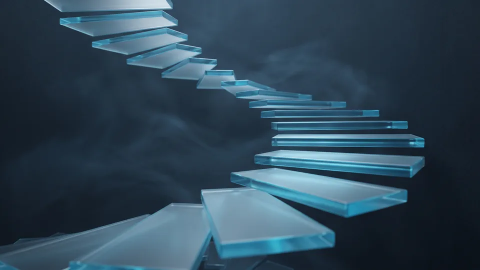

Hazır Tema ile Özel Tasarım Arasındaki Temel Fark Nedir?
Hazır tema kiralanmış bir kalıptır, özel tasarım ise markanıza göre sıfırdan üretilen yapıdır. Fark, sahiplikte ve esneklikte ortaya çıkar. Şablonda binlerce mağazayla aynı iskeleti paylaşırsınız. Terzi işi projede kod, arayüz ve genişleme kararları tamamen size aittir. Sahiplik farkı, ileriki yıllarda ödeyeceğiniz her kalemi doğrudan etkiler.
Hazır tema, çok sayıda mağazaya satılmak üzere üretilen paket arayüzdür. Özel tasarım, tek bir markanın hedefleri için sıfırdan kodlanan çözümdür. Kodun tüm hakları müşteriye aittir. Türkiye'de bu kararı veren işletme sayısı hızla artıyor. ETBİS 2025 raporuna göre ülkemizde 634 bin 611 işletme e-ticaret yapıyor. Pazar kalabalıklaştıkça e-ticaret sitesi tasarımının farklılaştırıcı gücü, fiyat etiketinde görünmeyen bir değer kalemine dönüşüyor.
Maliyet Kıyası Neden Etiket Fiyatıyla Bitmez?
Etiket fiyatı yalnızca kurulum gününü anlatır. Şablonun yıllık lisans yenilemesi ve ücretli eklentileri zamana yayılır. Uyumsuzluk çıkınca ödenen acil onarım bedelleri de listeyi kabartır. Özel projede bakım sözleşmesi tek ve öngörülebilir bir kalemdir. İki modeli sağlıklı kıyaslamanın yolu, üç ile beş yıllık toplam gideri aynı tabloya koymaktır. Değer, bu uzun pencerede netleşir.
Hazır Temanın Gerçek Maliyeti Ne Kadar?
Gerçek maliyet, başlangıç ücretine eklenen lisans, eklenti ve uyarlama giderlerinin yıllar içinde katlanan toplamıdır. Şablonu markaya benzetmek için harcanan geliştirici saatleri çoğu bütçe planında hiç yer almaz. Görünmeyen kalemler toplandığında, ucuz sanılan seçenek orta vadede beklenenden pahalı çıkabilir. Bu yüzden hesabı ilk günün değil beş yılın rakamıyla kurmak gerekir.
Şablon ekonomisinin cazibesi hızdır: birkaç gün içinde satışa başlayabilirsiniz. Bedeli ise standart kalıba bağlı kalmaktır. Markaya uyarlama isteği arttıkça geliştirici mesaisi büyür. Ucuz başlayan proje saat ücretleriyle şişer. Kullanmadığınız onlarca modülün kodu sitede yük olarak durur. Bu ağırlık hem hıza hem bakım giderine yansır. Benzer dengeyi kurumsal web sitesi projelerinde de gözlemliyoruz. E-ticaret sitesi tasarımında uyarlama bedeli, şablon ücretinin birkaç katına ulaşabiliyor.
Şablonda Hangi Gider Kalemleri Gizlidir?
Görsel kimliğinizi grafik tasarım ekibimizle netleştirdikten sonra, e-ticaret sitesi tasarımına şablonla başlayan işletmelerin en sık atladığı kalemler şunlardır:
- Yıllık tema lisansı ve güncelleme paketi
- Ücretli eklenti abonelikleri ve sürüm yükseltmeleri
- Uyarlama için ödenen geliştirici saatleri
- Tema güncellemesi sonrası bozulan işlevlerin onarımı
- Yavaşlayan sayfalar için performans iyileştirme bedeli
Çoğu teklif dosyası, beş kalemin yıllık toplamını hiç gündeme getirmez.
Özel E-Ticaret Sitesi Tasarımı Hangi Durumda Mantıklı Yatırımdır?
Özel tasarım; büyüyen, marka farkı arayan ve trafiği artan işletmeler için mantıklı bir yatırımdır. Başlangıç bedelini dönüşüm artışıyla geri kazandırır. Küçük ölçekte şablon yeterli olabilir. Ciro büyüdükçe esneklik ihtiyacı bütçeden daha belirleyici hâle gelir. Kararı beğeniyle değil ölçek verisiyle vermek gerekir.
Özel e-ticaret sitesi tasarımı, her bileşenin iş modelinize göre kurgulandığı geliştirme sürecidir. Kapsam, arayüzden yönetim paneline kadar uzanır. Ticaret Bakanlığı'nın görünüm raporuna göre e-ticaret hacmi 2024'te 3 trilyon TL'yi aştı. Sektörün gayrisafi yurt içi hasıla payı da yüzde 6,5 oldu. Büyüyen pastada birbirine benzeyen mağazalar fiyat rekabetine sıkışıyor. Terzi işi bir yapı ise markanızı kalabalıktan ayırıyor. Kampanya dönemlerinde ihtiyaç duyduğunuz özel işlevleri eklenti avına çıkmadan geliştirebilirsiniz. Kapsamın tamamını e-ticaret çözümleri sayfamızda bulabilirsiniz.
Yatırımın Geri Dönüşünü Ne Belirler?
Geri dönüşü üç değişken belirler: dönüşüm oranı, sepet tutarı ve tekrar satın alma sıklığı. Tasarımı özenle kurgulanmış bir e-ticaret sitesi, aynı reklam bütçesiyle daha fazla sipariş üretebilir. Arama görünürlüğü de denklemin parçasıdır. teknik SEO hizmetimizle desteklenen özgün kod yapısı, organik trafiği kalıcı maliyet avantajına çevirir.
Toplam Sahip Olma Maliyetini Nasıl Hesaplarsınız?
Toplam sahip olma maliyeti; kurulum, lisans, bakım, uyarlama ve yenileme giderlerinin toplamıdır. Hesabı üç ile beş yıllık pencere üzerinden kurarsınız. Tek seferlik fiyat yerine bu toplamı kıyaslayan işletmeler iki modelin gerçek farkını görür. E-ticaret sitesi tasarımı bütçesini bu yöntemle kuran KOBİ'ler, kararını duygudan arındırır.
Toplam sahip olma maliyeti (TCO) finansal bir ölçüttür. Sistemin satın alma anından devre dışı kalmasına kadar ürettiği bütün giderleri kapsar. Hesabı beş adımda kurabilirsiniz:
- Kurulum bedelini yazın: tema ücreti veya özel proje teklifi.
- Yinelenen giderleri ekleyin: lisans, eklenti aboneliği, barındırma, bakım sözleşmesi.
- Uyarlama mesaisini öngörün: yıllık geliştirici saati ile saat ücretini çarpın.
- Yenileme döngüsünü hesaba katın: mevcut yapının kaç yılda bir baştan kurulacağını belirleyin.
- İki senaryonun beş yıllık toplamını alt alta koyup kıyaslayın.
Yinelenen Giderler Neden Belirleyicidir?
Yinelenen gider, tek seferlik bedelin aksine her yıl tekrar eden ödeme kalemidir. Kur hareketleri, döviz bazlı lisans ve eklenti aboneliklerini doğrudan sarsar. Bütçesini TL ile planlayan KOBİ'ler için bu oynaklık ciddi bir risktir. Sabit bakım sözleşmesi ise öngörülebilirlik sağlar.
Gizli Kalem: Yeniden Kurulum Maliyeti
Şablon siteler belirli bir noktadan sonra çoğunlukla yama kabul etmez. O noktada baştan kurulum gündeme gelir. Somut bir senaryo düşünün. Tema geliştiricisi bir gün güncelleme desteğini durdurur. Ödeme eklentisi yeni sürümle uyuşmaz ve sepet adımı hata verir. Tek çıkış yolu, ürün verisini taşıyıp mağazayı baştan kurmaktır. Bu taşınma; veri aktarımı, ekip eğitimi ve satış kaybı anlamına gelir. Özel yapıda ise mevcut kodu kademeli biçimde yenileyebilirsiniz. Tek başına bu fark bile beş yıllık maliyet dengesini değiştirebilir.
“2024 yılında 600 bin 800 olan e-ticaret yapan işletme sayısı, 2025'te 634 bin 611'e yükseldi.”
— Ticaret Bakanlığı, Türkiye'de E-Ticaretin Görünümü 2025
Karar Verirken Hangi Eşiklere Bakmalısınız?
Kararı; ürün sayısı, sipariş hacmi, kampanya yoğunluğu ve büyüme hedefi eşiklerine bakarak verin. Şablonla başlayıp belirli bir ölçekte özel yapıya geçmek de geçerli bir stratejidir. Önemli olan, geçiş anını tahminle değil maliyet verisiyle yakalamaktır. İşaretlerin en az ikisi sizde varsa özel çözümü ciddi biçimde değerlendirin.
Eşik derken kastımız, tercihi kişisel beğeniden çıkarıp veriye bağlayan somut göstergelerdir. TÜİK'in güncel araştırmaları, internetten alışverişin hanelerde yaygınlaşmayı sürdürdüğüne işaret ediyor. Talep tabanı genişledikçe siteniz ölçek sınavına daha erken giriyor. Şu göstergeleri izleyin:
- Ürün kataloğu birkaç yüz kalemi aşıyor ve varyasyon yönetimi şablonu zorluyor.
- Kampanya günlerinde trafik olağan seviyenin katlarına çıkıyor.
- Eklenti sayısı arttıkça sayfa hızı ve bakım gideri birlikte kötüleşiyor.
- Markanız, rakiplerle aynı kalıpta görünmenin satış kaybettirdiği bir segmentte yarışıyor.
E-ticaret sitenizin tasarımı bu eşiklerin gerisindeyse şablonla devam etmek bütçe açısından savunulabilir bir tercihtir.
Geçiş Stratejisi Nasıl Kurgulanır?
Geçiş stratejisini, şablon döneminde toplanan satış verisi üzerine kurarsınız. İlk aylarda hangi kategorilerin döndüğünü ve siparişlerin hangi cihazlardan geldiğini kaydedin. E-ticarette site tasarımı bu verilerle şekillendiğinde isabet oranı yükselir. Böylece özel e-ticaret sitesi tasarımına ayrılan bütçe tahmine değil ölçüme dayanır.

Hazır Tema ve Özel Tasarım Karşılaştırma Tablosu
| Kriter | Hazır Tema | Özel Tasarım |
|---|---|---|
| Başlangıç maliyeti | Düşük; tema bedeli ve kurulumla sınırlı | Yüksek; analiz, tasarım ve geliştirme dahil |
| Yayına çıkış süresi | Günler ile haftalar | Haftalar ile aylar (kapsama göre) |
| Yinelenen giderler | Yıllık lisans ve eklenti abonelikleri | Öngörülebilir bakım sözleşmesi |
| Uyarlama esnekliği | Kalıpla sınırlı; her istek ek mesai | Geniş; kod tabanı size ait |
| Rakiplerden farklılaşma | Zayıf; aynı temayı çok sayıda mağaza kullanır | Güçlü; arayüz markaya özgü |
| Ölçeklenme | Eklenti yükü büyüdükçe zorlaşır | Büyümeye göre kademeli genişler |
| Beş yıllık toplam maliyet | Görünenden yüksek çıkabilir | Başlangıçta yüksek, zamanla dengelenir |
Kapsamınıza uygun yol haritasını birlikte çıkaralım; adımları ve zamanlamayı netleştirelim.
Kapsam çıkaralım Hizmet sayfasını görHazır tema ile özel yapı tercihi, bugünkü bütçeyle gelecekteki büyüme arasındaki dengedir. Doğru ölçekte doğru modelle kurgulanan e-ticaret sitesi tasarımı, harcama kalemi olmaktan çıkar. Satış üreten bir varlığa dönüşür. TasarımMania olarak iki senaryoyu aynı toplam maliyet tablosunda hesaplıyoruz. Kararı sizin verilerinizle birlikte veriyoruz. E-ticaret sitesi tasarımınız için beş yıllık maliyet projeksiyonunu birlikte çıkarmak isterseniz bakım ve destek planımızla birlikte değerlendirelim.